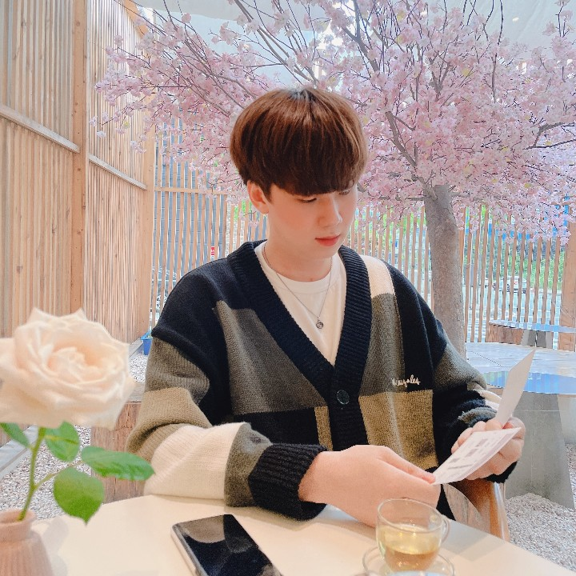

안녕하세요😃
Back-end 개발자 김연중 입니다.
Back-end 개발자 김연중 입니다.
포트폴리오 사이트 방문을 환영합니다!
현재 Java기반 Back-end 개발을 공부하며 성장하고 있는 개발자입니다.
저는 제 자신의 가치를 꾸준히 높이며, 변화의 흐름을 읽는 트렌디한 개발자가 되고 싶습니다.
아직 부족함이 많지만, 늘 성장하며 되돌아보고 있습니다. 항상 앞으로 나아가는 모습 보여드리겠습니다